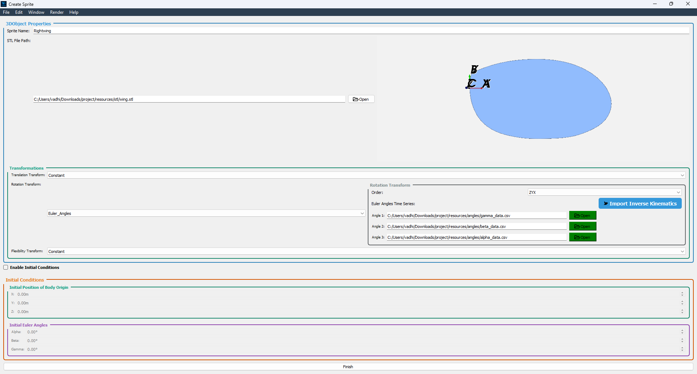

Sprite Creator Window#
What Is a Sprite?#
A Sprite is a 3D object that can be animated and manipulated within your scene. It can represent anything from a simple geometric shape to a complex model.
Sprites are defined by their geometry, transforms, and initial placement in 3D space.
The Sprite Creator Window is where you can create and configure these objects.
Note
See the Methodology section for more details on the Sprite class.
—
{kind=link}

Overview#
The Sprite Creator Window is where you can create and configure a new sprite for your scene. It provides a user-friendly interface for defining the geometry, transforms, and initial placement of the sprite in 3D space. The window is divided into three main sections:
3D Object Properties: This section allows you to define the geometry of your sprite, including the STL file and transforms.
Initial Conditions: This section allows you to set the initial position and orientation of the sprite in 3D space.
Finalize Your Sprite: This button finalizes the sprite creation process and returns you to the Scene Creator Window.
—
3D Object Properties#
Sprite Name
Enter a unique identifier for your 3D object.
STL File
Click Browse to select the .stl mesh file from disk. Once loaded, the built‑in visualizer renders the object with overlapping Body Axes (A, B, C) and Inertial Axes (X, Y, Z), showing their initial alignment.
Transforms
Choose how the object will move or deform during animation:
Translation: Select a preset (e.g., Constant, Linear).
Rotation: Select a preset (e.g., Constant, Euler Angles).
Flexibility: Choose a deformation model (e.g., Constant/Rigid, FlexibilityType1, FlexibilityType2).
—
Initial Conditions#
Tick the Enable Initial Conditions checkbox to enable the following options:
: - Initial Position of Body Axes
Set the initial position of the body axes in 3D space by entering values for:
X Position
Y Position
Z Position
: - Initial Orientation of Body Axes
Set the initial orientation of the body axes in 3D space by entering values for:
X Orientation
Y Orientation
Z Orientation
The visualizer in the 3D Object Properties section updates in real time to reflect these changes.
—
Finalize Your Sprite#
When you’re satisfied with the 3D object parameters, origin position, and orientation, click Finish. This creates the sprite with your specified settings and returns you to the Scene Creator Window with the created sprite added to the sprite list of the Scene Creator Window.
—
For detailed descriptions of each transform type, see the full Transform Reference in the Transform Reference section.